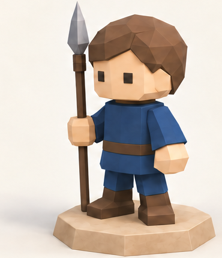
3/4 FRONT panel · 370 × 430
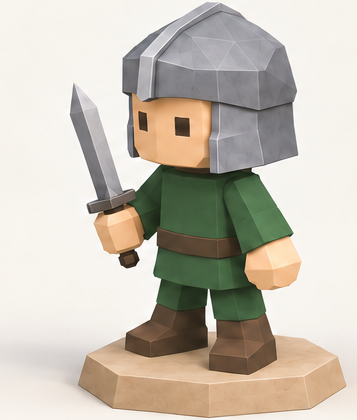
3/4 FRONT panel · 357 × 420
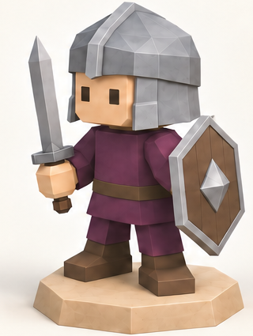
3/4 FRONT panel · 320 × 425
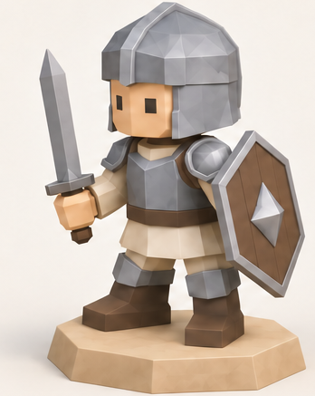
3/4 FRONT panel · 348 × 437
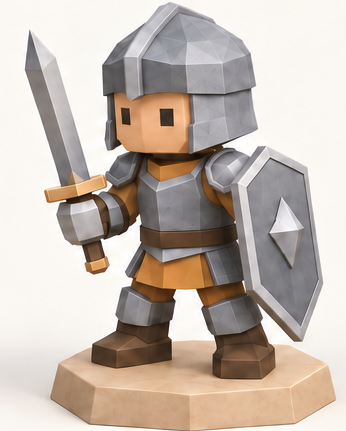
3/4 FRONT panel · 346 × 431
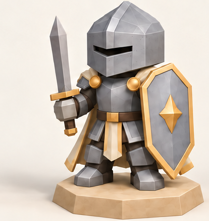
3/4 FRONT panel · 414 × 439
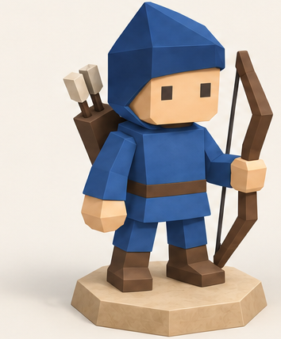
3/4 FRONT panel · 354 × 428
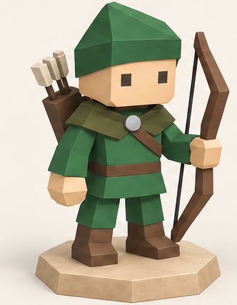
3/4 FRONT panel · 332 × 428
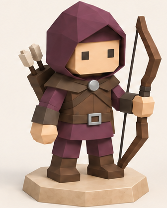
3/4 FRONT panel · 336 × 419
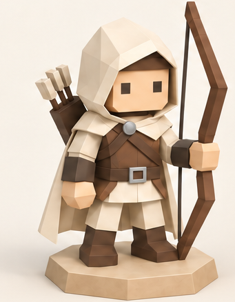
3/4 FRONT panel · 341 × 438
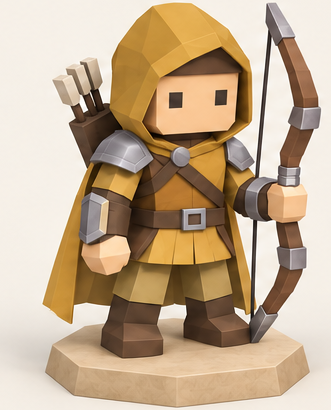
3/4 FRONT panel · 331 × 410
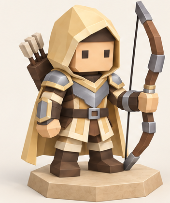
3/4 FRONT panel · 352 × 420
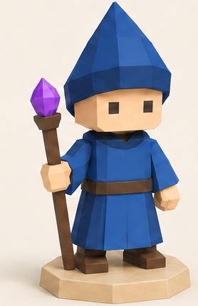
3/4 FRONT panel · 278 × 429
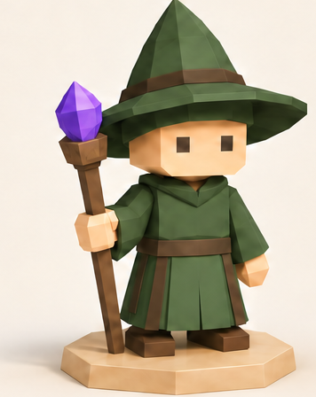
3/4 FRONT panel · 356 × 448
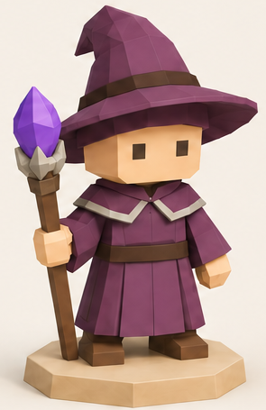
3/4 FRONT panel · 295 × 455
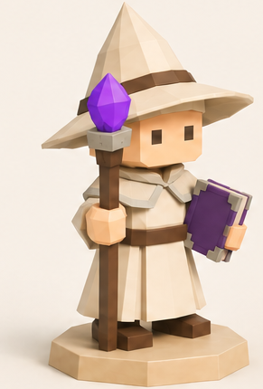
3/4 FRONT panel · 291 × 430
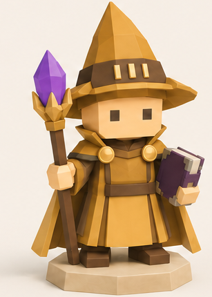
3/4 FRONT panel · 307 × 430
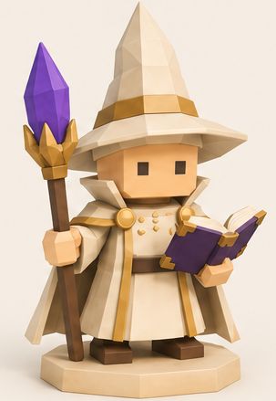
3/4 FRONT panel · 303 × 439
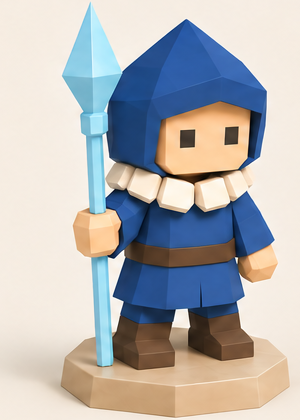
3/4 FRONT panel · 300 × 420
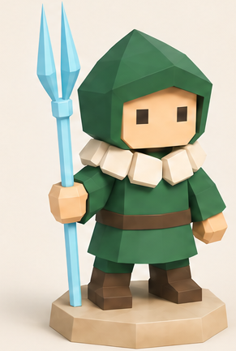
3/4 FRONT panel · 291 × 433
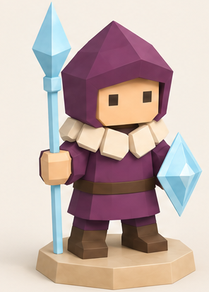
3/4 FRONT panel · 296 × 412
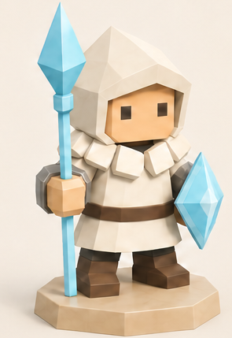
3/4 FRONT panel · 295 × 429
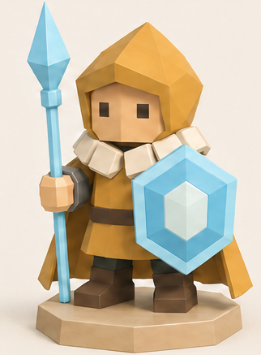
3/4 FRONT panel · 322 × 437
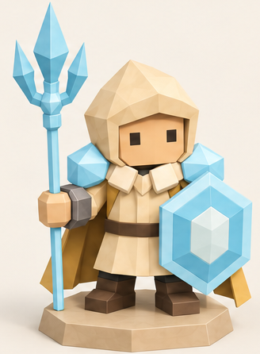
3/4 FRONT panel · 328 × 446
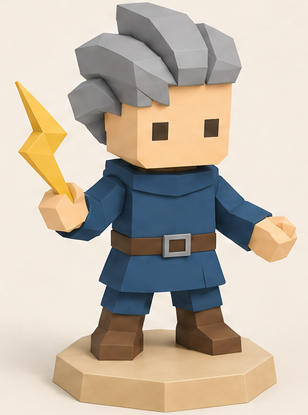
3/4 FRONT panel · 308 × 415
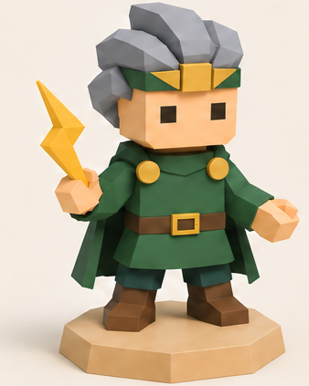
3/4 FRONT panel · 338 × 423
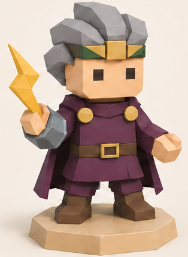
3/4 FRONT panel · 314 × 429
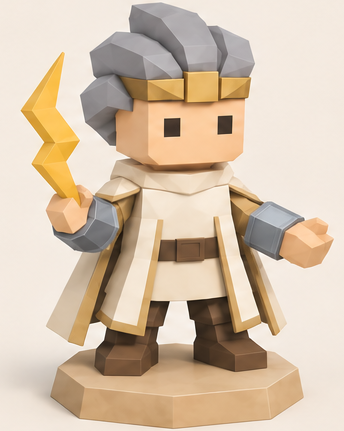
3/4 FRONT panel · 344 × 431
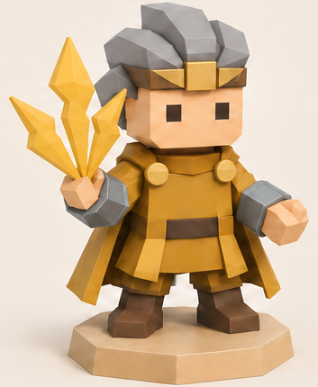
3/4 FRONT panel · 353 × 430
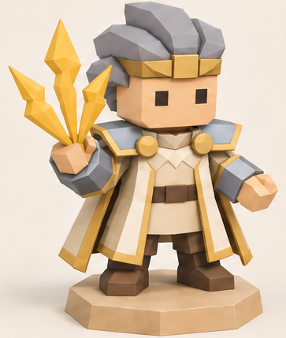
3/4 FRONT panel · 363 × 429
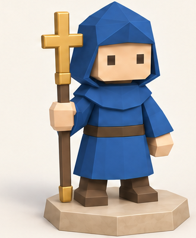
3/4 FRONT panel · 330 × 400
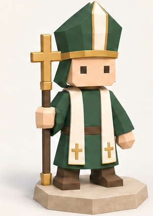
3/4 FRONT panel · 312 × 439
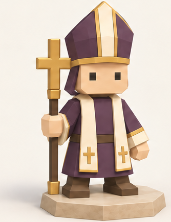
3/4 FRONT panel · 334 × 435
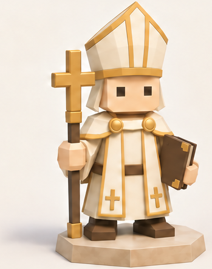
3/4 FRONT panel · 349 × 441
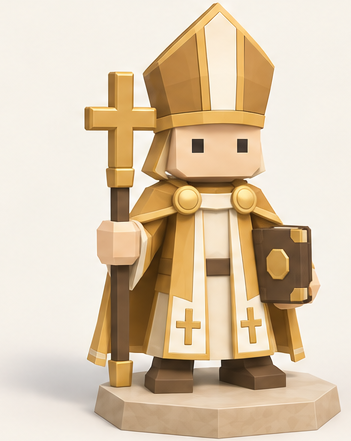
3/4 FRONT panel · 351 × 441
3/4 FRONT panel · 364 × 441
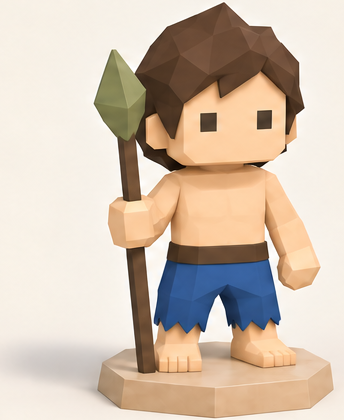
3/4 FRONT panel · 344 × 420
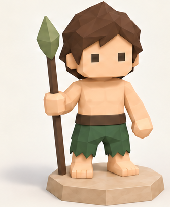
3/4 FRONT panel · 335 × 408
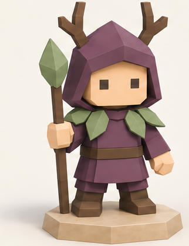
3/4 FRONT panel · 322 × 418
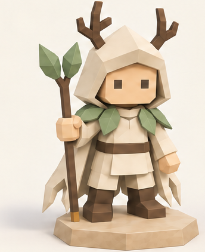
3/4 FRONT panel · 344 × 422
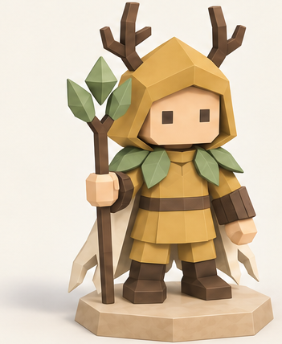
3/4 FRONT panel · 351 × 428
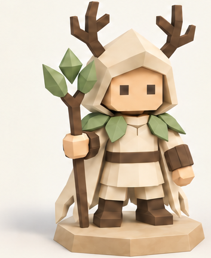
3/4 FRONT panel · 353 × 432
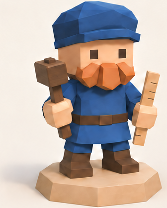
3/4 FRONT panel · 336 × 418
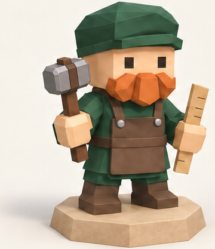
3/4 FRONT panel · 360 × 417
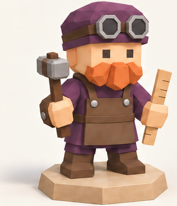
3/4 FRONT panel · 364 × 424
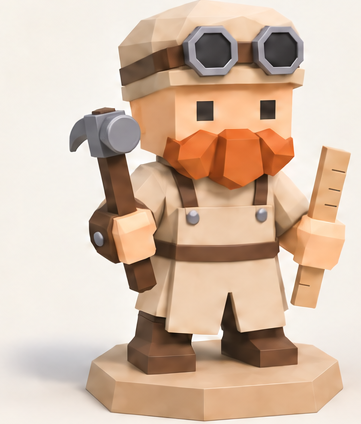
3/4 FRONT panel · 361 × 424
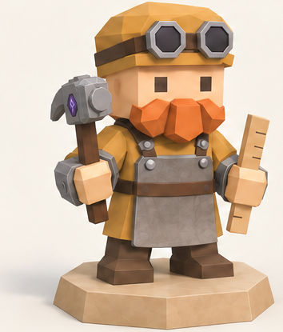
3/4 FRONT panel · 354 × 415
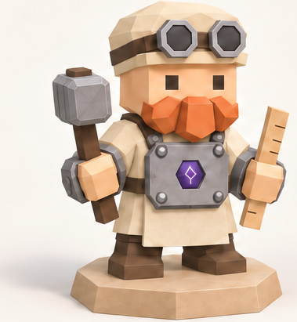
3/4 FRONT panel · 379 × 411
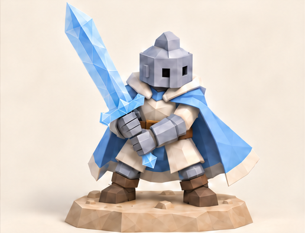
Exact named subject on current-model authoring concept board · 516 × 394
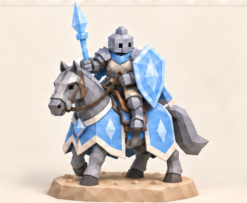
Exact named subject on current-model authoring concept board · 496 × 408
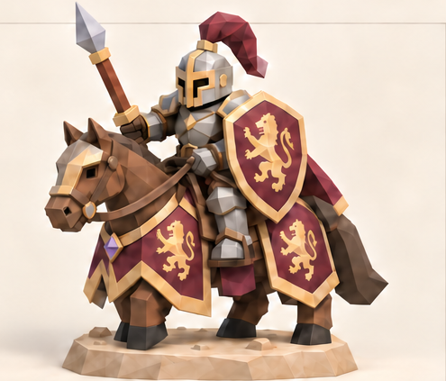
Exact named subject on current-model authoring concept board · 495 × 423
Exact named subject on current-model authoring concept board · 764 × 457
Exact named subject on current-model authoring concept board · 765 × 456
Exact named subject on current-model authoring concept board · 496 × 410
Exact named subject on current-model authoring concept board · 501 × 411
Exact named subject on current-model authoring concept board · 498 × 411
Exact named subject on current-model authoring concept board · 749 × 449
Exact named subject on current-model authoring concept board · 459 × 369
Exact named subject on current-model authoring concept board · 534 × 370
Exact named subject on current-model authoring concept board · 503 × 369
Exact named subject on current-model authoring concept board · 751 × 433
Exact named subject on current-model authoring concept board · 750 × 442
Exact named subject on current-model authoring concept board · 610 × 510
Exact named subject on current-model authoring concept board · 610 × 510
Exact named subject on current-model authoring concept board · 344 × 361
Exact named subject on current-model authoring concept board · 604 × 507
Exact named subject on current-model authoring concept board · 510 × 788
Exact named subject on current-model authoring concept board · 527 × 788
Exact named subject on current-model authoring concept board · 373 × 431
Exact named subject on current-model authoring concept board · 360 × 363
Exact named subject on current-model authoring concept board · 611 × 522
Exact named subject on current-model authoring concept board · 749 × 463
Exact named subject on current-model authoring concept board · 610 × 519
Exact named subject on current-model authoring concept board · 604 × 507
Exact named subject on current-model authoring concept board · 610 × 519
Exact named subject on current-model authoring concept board · 613 × 522
Exact named subject on current-model authoring concept board · 611 × 526
Exact named subject on current-model authoring concept board · 613 × 526
Exact named subject on current-model authoring concept board · 384 × 361
Exact named subject on current-model authoring concept board · 389 × 365
Exact named subject on current-model authoring concept board · 557 × 433
Exact named subject on current-model authoring concept board · 556 × 455
Exact named subject on current-model authoring concept board · 604 × 541
Exact named subject on current-model authoring concept board · 604 × 534
Exact named subject on current-model authoring concept board · 491 × 788
Full isometric subject, left panel · 671 × 807
3/4 FRONT panel · 345 × 422
3/4 FRONT panel · 298 × 434
3/4 FRONT panel · 419 × 418
3/4 FRONT panel · 372 × 424
3/4 FRONT panel · 446 × 426
3/4 FRONT panel · 426 × 434
3/4 FRONT panel · 312 × 434
3/4 FRONT panel · 450 × 440
3/4 FRONT panel · 459 × 385
3/4 FRONT panel · 479 × 428
3/4 FRONT panel · 428 × 427
3/4 FRONT panel · 359 × 423
3/4 FRONT panel · 346 × 433
3/4 FRONT panel · 305 × 439
3/4 FRONT panel · 428 × 441
3/4 FRONT panel · 381 × 430
3/4 FRONT panel · 416 × 442
3/4 FRONT panel · 398 × 440
3/4 FRONT panel · 395 × 393
3/4 FRONT panel · 411 × 432
3/4 FRONT panel · 424 × 436
3/4 FRONT panel · 417 × 423
3/4 FRONT panel · 389 × 432
3/4 FRONT panel · 469 × 421
3/4 FRONT panel · 473 × 401
3/4 FRONT panel · 438 × 409
3/4 FRONT panel · 494 × 423
3/4 FRONT panel · 468 × 412
3/4 FRONT panel · 425 × 404
3/4 FRONT panel · 507 × 402
3/4 FRONT panel · 339 × 425
3/4 FRONT panel · 385 × 422
3/4 FRONT panel · 343 × 430
3/4 FRONT panel · 505 × 428
3/4 FRONT panel · 440 × 450
3/4 FRONT panel · 384 × 434
3/4 FRONT panel · 388 × 456
3/4 FRONT panel · 392 × 419
3/4 FRONT panel · 467 × 414
3/4 FRONT panel · 468 × 437
FRONT panel; full spear and shield · 335 × 427
3/4 FRONT panel · 474 × 363
3/4 FRONT panel · 461 × 428
LEFT panel; full axe and silhouette without neighboring caption · 308 × 456
3/4 FRONT panel · 502 × 401
3/4 FRONT panel · 370 × 426
3/4 FRONT panel · 461 × 449
3/4 FRONT panel · 474 × 425
3/4 FRONT panel · 448 × 446
3/4 FRONT panel · 479 × 444